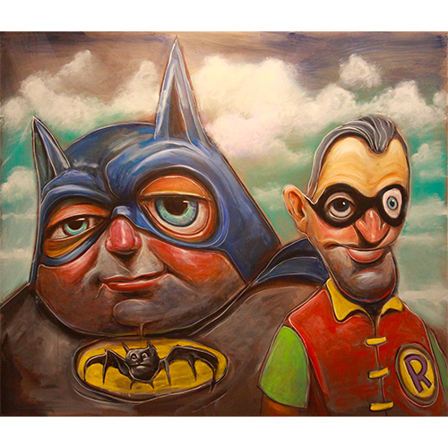
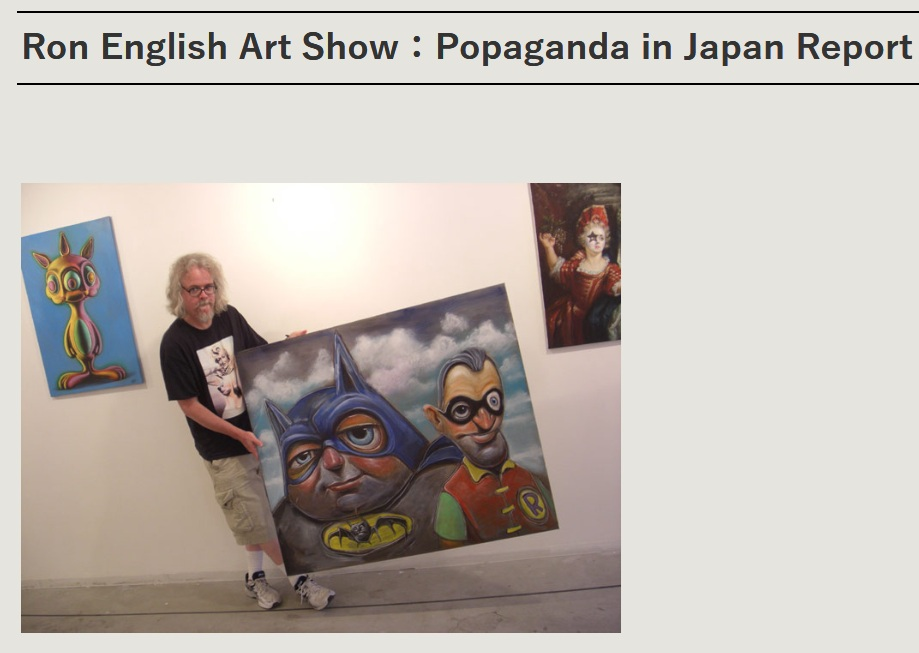
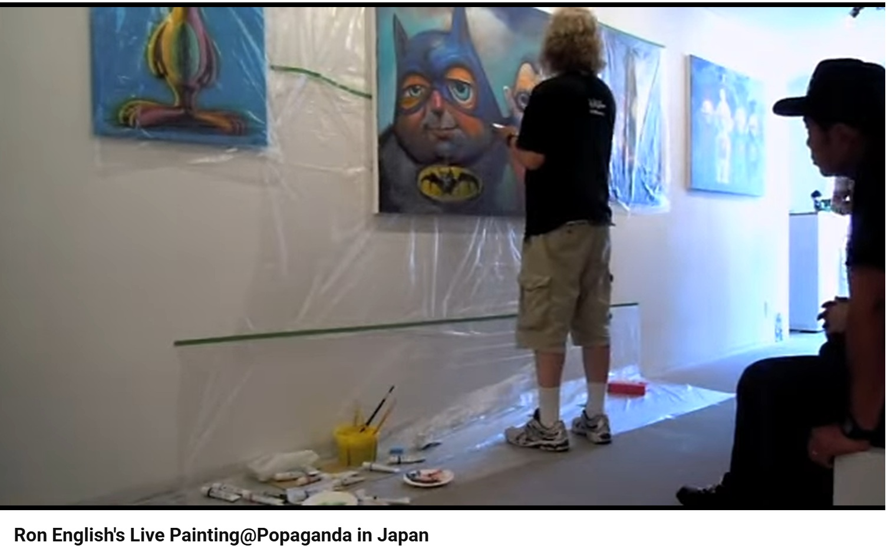
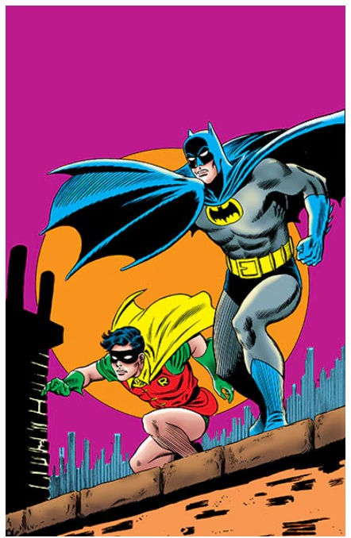

Exhibitions
Popaganda in Japan, Public Image.3D, Tokyo, Japan, July 1–18, 2011.
Notes
This work appears on A-FILES’ report page for Popaganda in Japan, available here, accessed April 12, 2026.
This work appears in the YouTube video Ron English's Live Painting@Popaganda in Japan, showing Ron English painting the work live during Popaganda in Japan on July 3, 2011, available here, accessed April 12, 2026.
Dimensions are approximate and are based on visual comparison and available documentation.
This work references DC Comics’ Batman and Robin; a representative image is available here.
Ancillary Documentation


